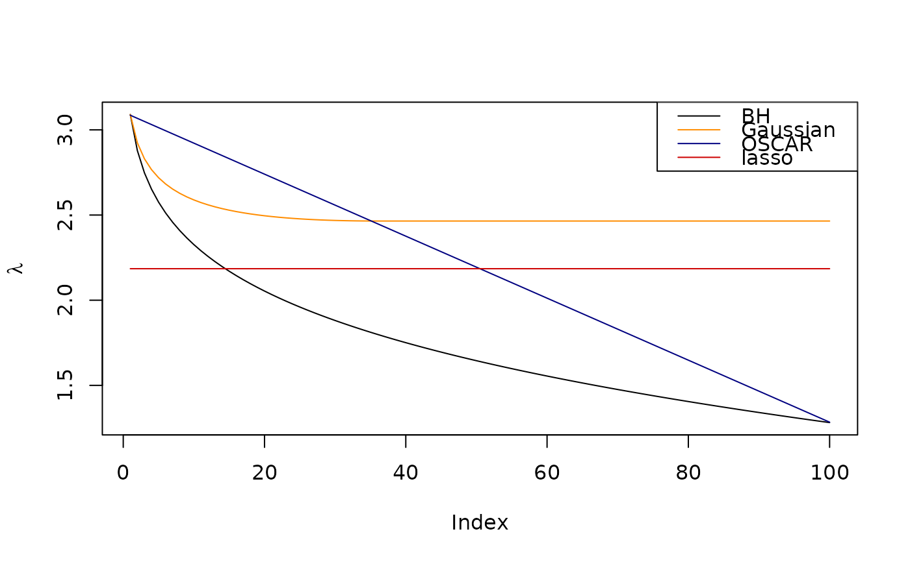

Generate Regularization (Penalty) Weights for SLOPE
Source:R/regularizationWeights.R
regularizationWeights.RdThis function generates sequences of regularizations weights for use in
SLOPE() (or elsewhere).
Usage
regularizationWeights(
n_lambda = 100,
type = c("bh", "gaussian", "oscar", "lasso"),
q = 0.2,
theta1 = 1,
theta2 = 0.5,
n = NULL
)Arguments
- n_lambda
The number of lambdas to generate. This should typically be equal to the number of predictors in your data set.
- type
The type of lambda sequence to use. See documentation for in
SLOPE(), including that related to thelambdaparameter in that function.- q
parameter controlling the shape of the lambda sequence, with usage varying depending on the type of path used and has no effect is a custom
lambdasequence is used. Must be greater than1e-6and smaller than 1.- theta1
parameter controlling the shape of the lambda sequence when
lambda == "OSCAR". This parameter basically sets the intercept for the lambda sequence and is equivalent to \(\lambda_1\) in the original OSCAR formulation.- theta2
parameter controlling the shape of the lambda sequence when
lambda == "OSCAR". This parameter basically sets the slope for the lambda sequence and is equivalent to \(\lambda_2\) in the original OSCAR formulation.- n
The number of rows (observations) in the design matrix.
Details
Please see SLOPE() for detailed information regarding the parameters in
this function, in particular the section Regularization Sequences.
Note that these sequences are automatically scaled (unless a value for
the alpha parameter is manually supplied) when using SLOPE(). In this
function, nu such scaling is attempted.
Examples
# compute different penalization sequences
bh <- regularizationWeights(100, q = 0.2, type = "bh")
gaussian <- regularizationWeights(
100,
q = 0.2,
n = 300,
type = "gaussian"
)
oscar <- regularizationWeights(
100,
theta1 = 1.284,
theta2 = 0.0182,
type = "oscar"
)
lasso <- regularizationWeights(100, type = "lasso") * mean(oscar)
# Plot a comparison between these sequences
plot(bh, type = "l", ylab = expression(lambda))
lines(gaussian, col = "dark orange")
lines(oscar, col = "navy")
lines(lasso, col = "red3")
legend(
"topright",
legend = c("BH", "Gaussian", "OSCAR", "lasso"),
col = c("black", "dark orange", "navy", "red3"),
lty = 1
)
